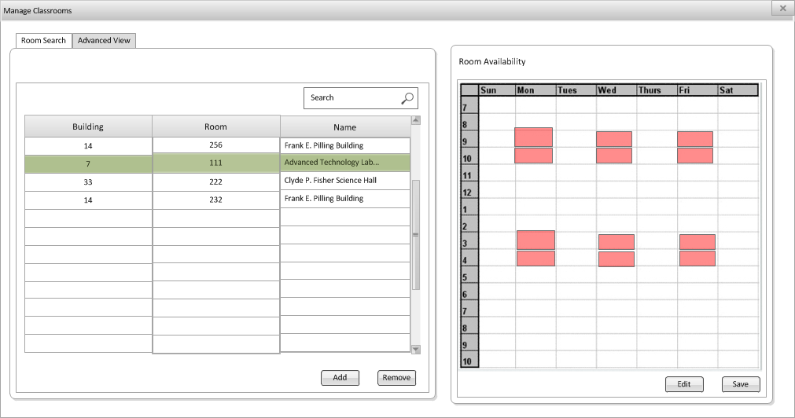

Manage Classroom View
(Populated Database)

<-- Prev
Top
Next -->
This is the home screen that is displayed to the user when trying to Manage Classrooms when the database is populated and a classroom is selected.
Read more